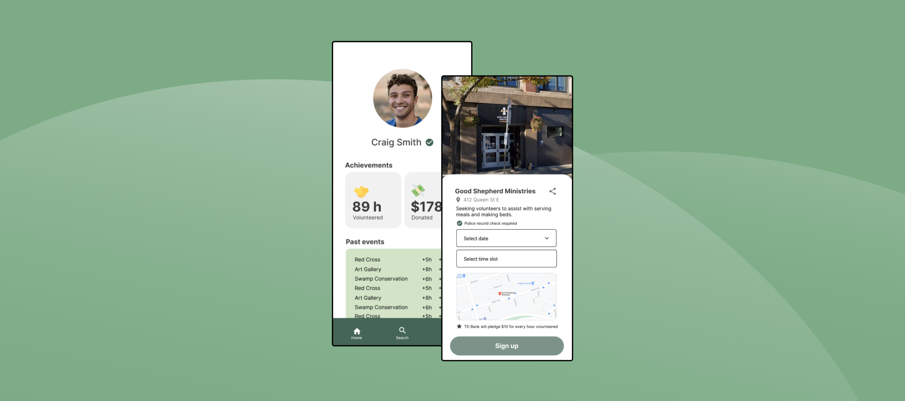
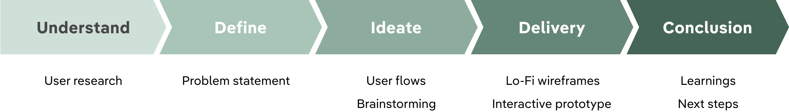
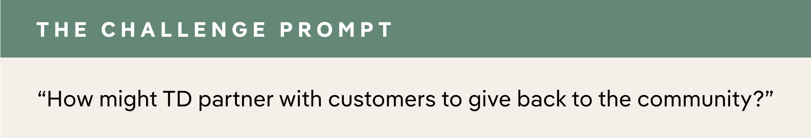
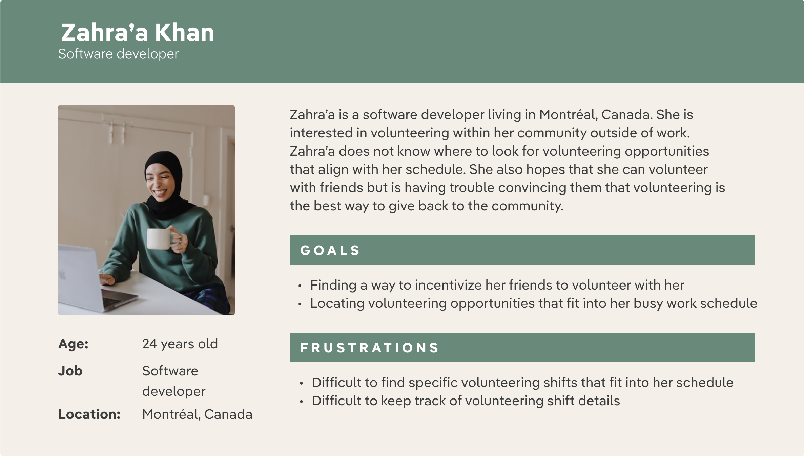
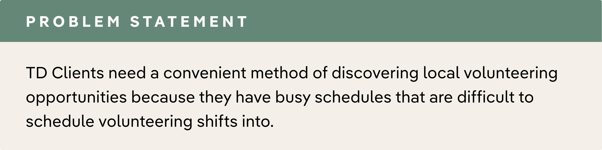
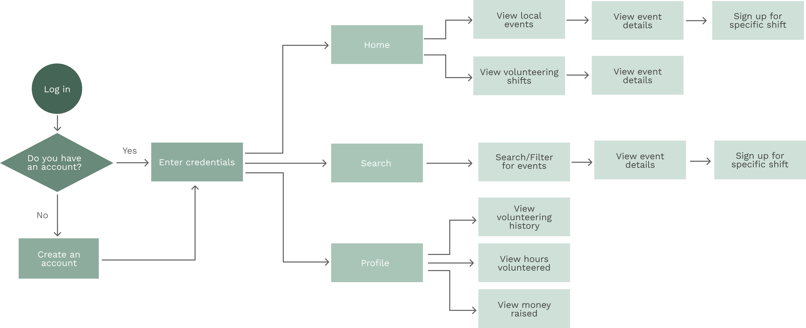
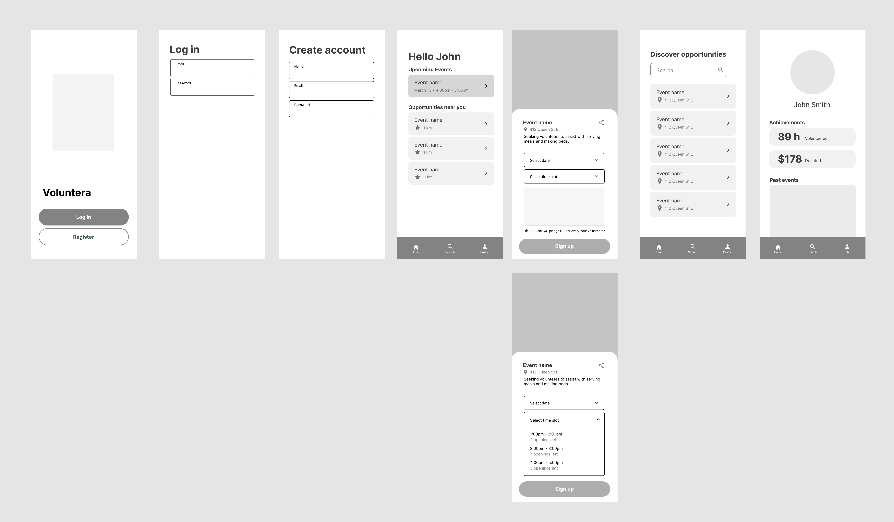

Designing and pitching a mobile experience that enables TD clients to give back to their community
TD LAB — WINTER 2020 INTERNSHIP

MY TEAM
Product Designer (me)
UI/UX Designer (Tony Lu)
MY ROLE
User research, wireframing,
prototyping, interaction design
Project context
TD Lab is a digital innovation team within TD Bank dedicated to creating experiences "For students, by students". Throughout my internship, I worked on several projects alongside five other interns: a UX designer, a business analyst and three software developers.
During a week long internal hackathon at TD, I had the opportunity to collaborate with a software developer intern to design, create and pitch a mobile-first experience that enabled TD clients to give back to their community.
Design process

STEP 1: UNDERSTAND
Understanding the challenge
In the beginning of this hackathon, my team was provided with a challenge prompt. The challenge that we were given was to design and create a solution to enable TD clients to give back to the community.

Getting to know the user
The first part of understanding the challenge involved getting to know the user. For this challenge, I chose to focus on users aged 18-35 years old based off of the fact that 58% of the active users of the TD MySpend app are within this age group.
Using this information, I decided to conduct user interviews and user surveys with TD clients within this user group to gain more insight into their pain points and goals.

Here were some of the key insights:
83%
of respondents reported that they donate to charity
42%
of respondents reported that volunteering and donating money were of equal value
25%
of respondents reported that they volunteer often
STEP 2: DEFINE
What are we designing?
After narrowing down the problem space and gaining a thorough understanding of our target user group, I captured the problem in a single statement.

STEP 3: IDEATE
Brainstorming potential solutions
During the ideation process, I approached aspects of the solution by dividing the key ideas up into a series of questions. Answering these questions helped me brainstorm potential ways of tackling the problem.

User flow
I created a user flow diagram to visually represent the user’s journey as they interact with the product. By mapping out the user flow, I gained a thorough understanding of each screen's functionality and what interactions needed to be supported.

STEP 3: IDEATE
Deliver solutions that work
At this stage, I worked towards translating the user flows into low fidelity wireframes using Figma.

Introducing Voluntera
Introducing Voluntera, a mobile application focused on providing users with an opportunity to partner up with TD to give back to the community. This app integrates a reward program where TD Bank pledges a monetary donation to an organization on behalf of the user for every hour volunteered at the same organization. This serves as method of incentivizing volunteering locally and getting involved with one's community.
Reflection
Importance of communication
This project gave me the opportunity to work closely with a software developer which taught me how important clear communication is when it comes to handing off designs to developers.
Be open to design feedback
As the sole designer on this project, I found myself making many design decisions by myself. In design, it's essential to get design feedback from others.Throughout this project, I asked other designers on the product team to critique my designs to highlight opportunities for improvement.
NEXT STEPS
The next steps for this project would involve conducting usability testing to validate the current solution, gain user insights, and continue to iterate on the solution until it aligns with the problem statement.